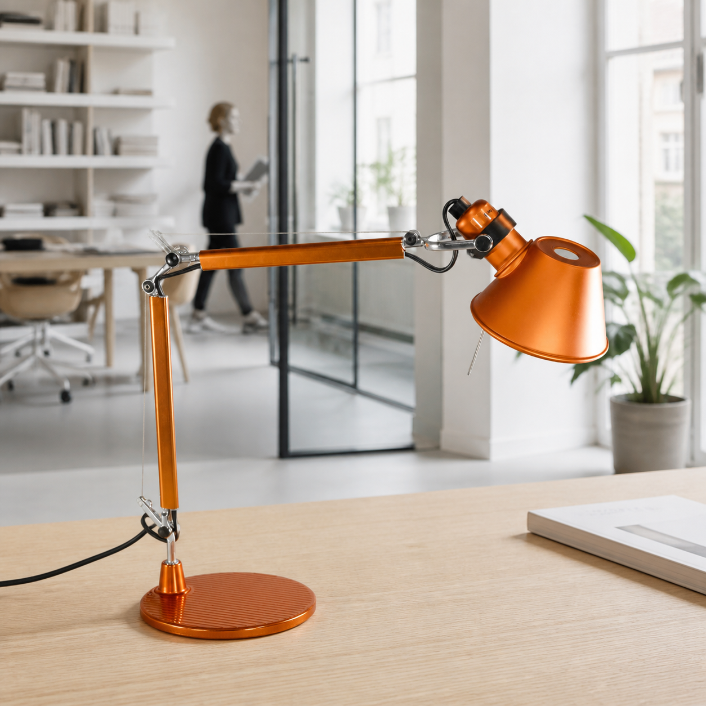
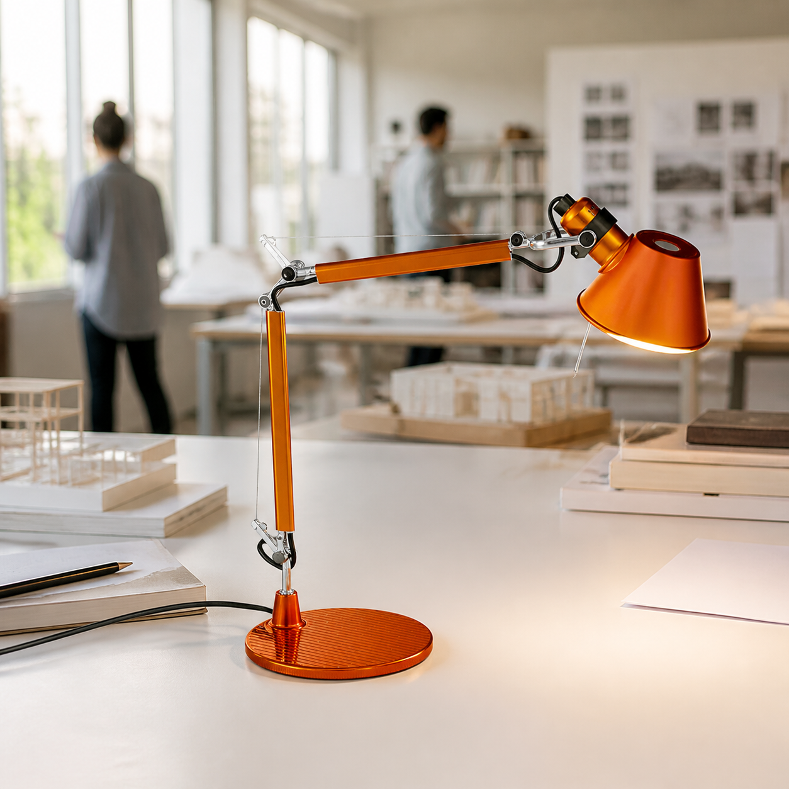
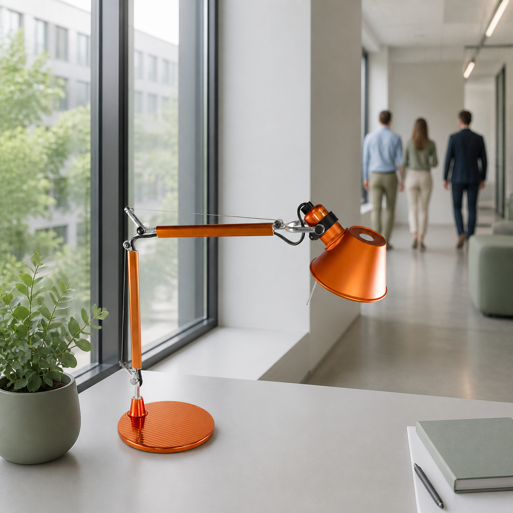
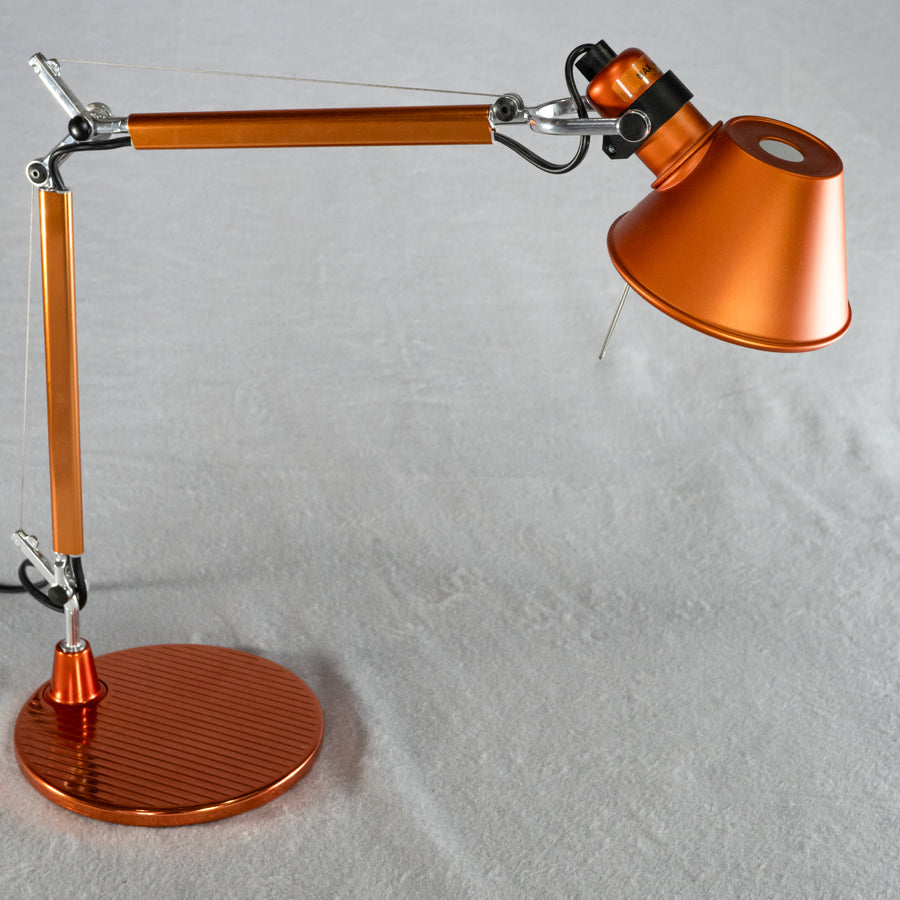

Artemide · gebraucht
Tolomeo Micro
Tavolo
Schreibtischlampe · Orange · sehr guter Zustand
Ein Entwurf, der seit Jahrzehnten zeigt, wie leicht technische Präzision wirken kann. Die Tolomeo Micro verbindet flexible Funktion mit einer unverwechselbaren Silhouette.
Produktdetails
- Hersteller
- Artemide
- Modell
- Tolomeo Micro Tavolo
- Farbe
- Orange
- Material
- Aluminium, poliert
- Fassung
- E14
- Maße
- H 73 cm · L 45 cm
Zustand
Gebraucht, in sehr gutem Zustand. Ohne auffällige Kratzer oder Dellen. Bitte beachten Sie die Originalaufnahmen für den konkreten Zustand.
Lieferung & Service
Versandkosten und verfügbare Lieferoptionen werden im Checkout berechnet. Fragen zum Produkt beantworten wir gern persönlich.
Ein moderner Klassiker
Bewegliches Licht.
Bleibendes Design.
Das präzise Zugseilsystem macht die Leuchte flexibel einstellbar, während ihr schlanker Aufbau den Arbeitsplatz optisch offen hält. Die orange Oberfläche setzt einen bewussten Akzent – in privaten Arbeitszimmern ebenso wie in modernen Büros.
Weiter entdecken